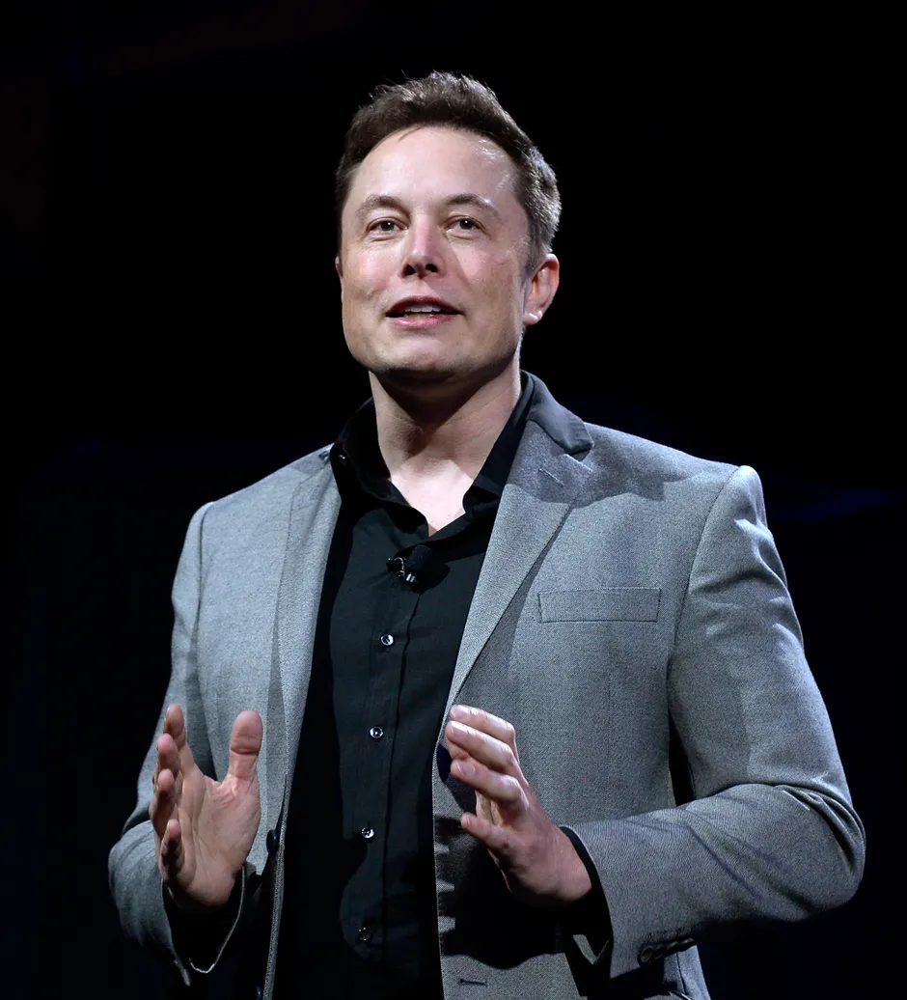

<link rel="stylesheet" type="text/css" href="finalprojectstyle.css">
<main id="main">
  <div>
  <h1 id="title">Elon Reeve Musk</h1>
  <figure id="img-div">
    
    <header id="header">
      Elon Musk is a South African-born American industrial engineer, entrepreneur, who co-founded Paypal and founded aerospace transportation services company SpaceX.
    <header>
  </figure>
  <section id="tribute-info">
    </div>
    <h3 id="headline">Here's a mini biography of Elon Musk:</h3>
    <ul>
      <li><b>Early Life</b> - Musk was born to a South African father and a Canadian mother. At age 12 he created a video game and sold it to a computer magazine. Soughting the greatee economic oppurtinities he left South Africa to go to the USA.</li>
      <li>
        <b>Paypal</b> - Musk attended Queen's University and in 1992 he transferred to the University of Pennsylvania where he received bachelor's degrees in physics and economics. In 1999 he decide that the internet had much more potential and later then founded an online financial service called Paypal which was bought later in 2002 by Ebay.
         
      </li>
      <li>
        <b>SpaceX</b> - In 2002 he founded SpaceX to make more affordable rockets. The first two rockets were the Flacon 1 and the Falcon 9. A third rocket, the Falcon Heavy was designed to carry 117,000 pounds.SpaceX also developed which carries supplies to the International Space station. 
      </li>
      <li><b>Video</b>- Elon Musk Celebrating the Falcon Heavy launch.
      <video width="400" height="240" controls>
      <source src="Elon Musk.mp4" type="video/mp4">
        </li>


      <li>
        <b>Tesla</b> - Musk had long been interested in the possibilities of electric cars and in 2004 he became one of the major funders of Tesla. In 2006 Tesla introduced its first car, the Roadster, which could travel 245 miles on a single charge.Two years later Tesla introduced the Model S sedan. Dissatisfied with the projected cost of a high-speed rail system in California, Musk in 2013 proposed an alternate faster system, the Hyperloop, a pneumatic tube in whoch a pod carrying 28 passengers would travel 350 miles between Los Angeles and San Fransisco in 35 minutes at a crazy speed of 760 miles per hour.
        
      </li>	
     <li><b>Twitter</b> - Musk joined the social media service Twitter in 2009 as @ elonmusk. He became one of the most popular accounts on the site, with more than 85 million followers as of 2022. Early in April 2022 Musk made a bid for the entire company at a value of $54.20 a share for $44 billion which Twitter later acccepted making the sole owner of the company 
      </li>
    </ul>
     He inspired me a lot and I really admire him. If you want you can see more about him on his <a
        id="tribute-link"
        href="https://en.wikipedia.org/wiki/Elon_Musk"
        target="_blank"
        > Wikipedia page</a

   
  
